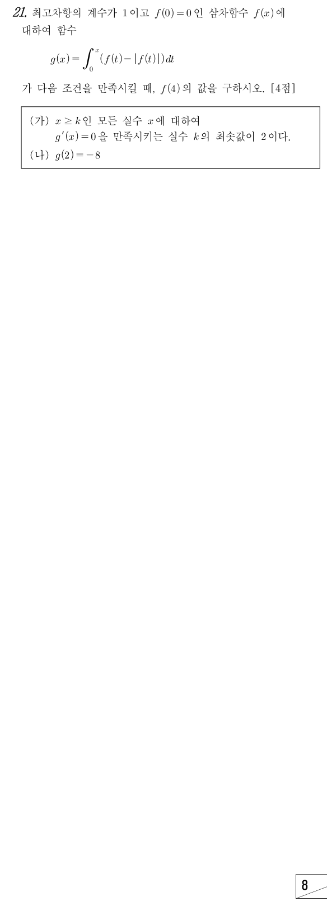

판단(가)는 에 대한 말이라서, 먼저 ㉡을 미분해서 f(x)의 부호 조건으로 바꿔 놓고 시작하자.
'최솟값이 2'는 는 되고 2보다 작은 k는 하나도 안 된다는 두 가지야. 그래서 2의 바로 왼쪽에 인 x가 계속 있고, f(x)가 연속이니까 도 같이 나와.
주의인 곳에서도 이야. 등호는 쪽에 붙여야 해.
㉠의 과 앞에서 얻은 으로 인수 두 개가 정해지고, 최고차항의 계수가 1이니까 남는 건 일차식 하나야.
판단인 모든 x에서 이어야 해. a가 2보다 크면 에서 이 돼서 (가)에 어긋나.
주의이면 에서 이라 k의 최솟값이 0이 돼 버려. (가)에 어긋나니까 빼.
인 부분은 적분 안의 함수가 0이라 사라지고, 인 부분만 로 남아.
판단(나)를 쓰려면 에서 f(t)가 음수인 범위를 알아야 해. 그게 a가 0보다 큰지 아닌지로 갈리니까 과 둘로 나누면 전체가 빠짐없이 덮여.
이 경우에는 전체에서 이니까 적분 안의 함수가 통째로 야. 여기서 구한 는 다음 단계에서도 다시 써.
주의나온 a가 이 경우의 범위 안에 있는지 확인하고 넘어가자.
는 에서 를 빼면 돼. 앞 단계에서 구한 값을 그대로 가져오면 되지.
판단사차방정식을 풀려고 하지 말고 에서 좌변이 0이 될 수 있는지만 보자. , 이라 는 보다 크고, 그러면 (나)를 만족시키는 a가 이 범위에 없어.
확인은 두 조건 모두 해야 해. (가)는 2부터는 이고 2의 바로 왼쪽에서는 인지를 보고, (나)는 적분을 다시 해서 보면 돼.
단축에서 곡선 와 t축 사이의 부분이 가로 , 세로 2인 직사각형 안에 들어가. 넓이만 비교하면 사차식 계산 없이 (나)에 못 미친다는 게 보여.
(I)의 계산과 마지막 확인은 본 풀이 그대로 하면 돼.
언제 쓰나: 탈락시킬 경우에서 정확한 값은 필요 없고, 곡선과 축 사이의 넓이가 목표값보다 작다는 것만 직사각형으로 보일 수 있을 때 쓰면 돼.